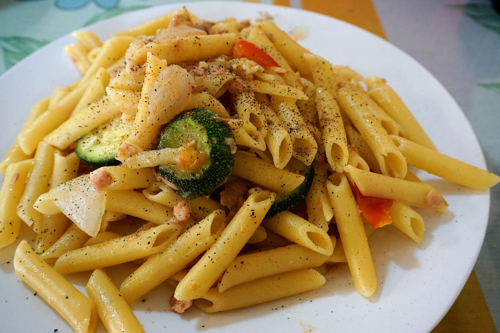

Zutaten für :
1. Stelle einen großen Topf mit Wasser für die Nudeln auf.
2. Schneide den Lachs in mundgerechte Stücke.
3. Erwärme das Olivenöl in einer beschichteten Pfanne und brate die Lachsstücke darin rundherum an.
4. Nimm sie aus der Pfanne heraus.
5. Schneide die Zwiebel in feine Würfel und hoble die Zucchini in feine Scheiben.
6. Brate die Zwiebelwürfel in der Pfanne 3 Minuten im restlichen Olivenöl an (falls keins vorhanden ist, bitte
nachfüllen).
7. Füge die Zucchinischeiben hinzu.
8. Brate sie etwa 5 Minuten an und gare in der Zwischenzeit die Nudeln nach Packungsanleitung.
9. Lösche die Zucchini mit 100 ml Nudelwasser oder Weißwein ab und füge den Frischkäse, die Sahne, das Salz,
Pfeffer,
Chili und Zitronenabrieb hinzu.
10. Lass die Soße etwa 3–4 Minuten köcheln.
11. Schütte die Nudeln ab.
12. Halbiere die Tomaten und schneide den Basilikum in feine Streifen.
13. Gib nun die Nudeln, Tomaten und das Basilikum mit in die Soße und rühre alles gut durch.
14. Würze nach Bedarf mit Salz und Pfeffer nach und serviere die Nudelpfanne mit frisch geriebenem Parmesan.
Ismael Toumi